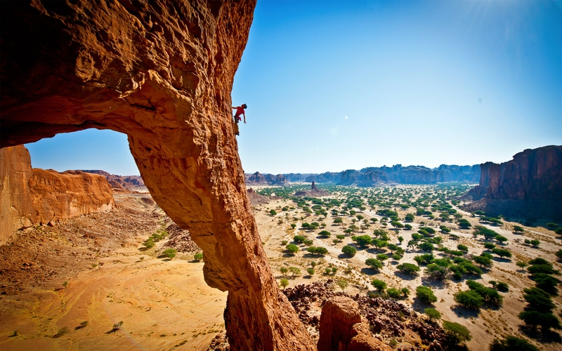

BASIC ROCK CLIMBING
The basic premise behind rock climbing is extremely simple. You are trying to climb
from the bottom to the top of something. If that was all there was to it, then you would
need nothing but your body and a good pair of climbing shoes. The other part of the sport
comes with the possibility of slipping anywhere along the way. Because of the possibility
of falling, rock climbing involves a great deal of highly specialized equipment to catch
you when you fall. When you're rock climbing outdoors on "traditional" routes, learning
to use and properly place this equipment is at least half of the sport! The necessary
equipment includes a harness, rock climbing shoes, chalk, a belayer, your body, and clothes. (optional friends).
